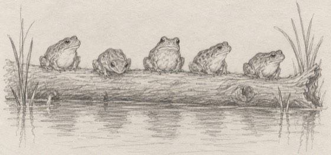

|
Five frogs are sitting on a log. Three decide to jump off. How many are left?
Take a second. The obvious answer is wrong.
Five.
They only decided to jump.
As far as I know, they’re still sitting there.

Deciding isn’t jumping. It just feels like it, after a while.
So let me ask you.
How long have you been “deciding” about him?
Whether to text him first. Whether to tell him how you really feel. Whether to stay, or finally go.
Or whether to let anyone new get close at all.
And for some people it isn’t love. It’s the job they keep meaning to leave.
Here’s why that log is so hard to get off. While you’re still deciding, nothing can go wrong. He can’t say no. You can’t choose wrong. Nobody gets hurt. Every door stays a little bit open.
The log is safe. It just doesn’t go anywhere.
So here’s my invitation.
Come and tell me what you’ve been deciding about. Just you and me, one to one. Type it the way you’d say it to a friend. You don’t have to have decided anything first.
Then I’ll tell you plainly what I see:
➤ what’s really been keeping you on the log
➤ what each choice could bring, the good and the hard
➤ the first small step, if you want to take one
Evelyn, I’ve been deciding for too long. Help me see what’s stopping me →
I won’t push you off the log, and I won’t promise you a soft landing. I’ll give you an honest look, from someone who isn’t sitting on it with you.
And if you’ve never talked to me before, your first 3 minutes are on me. That’s plenty of time to tell me what you’ve been deciding about.
Those five frogs are still on their log. You don’t have to stay on yours.
Start my 1:1 conversation with Evelyn →
— Evelyn
P.S. Talking to me isn’t jumping off the log. It’s just a good look at the water first. Come and tell me what you’ve been deciding about. Start here.
|